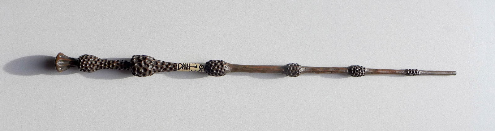

Glace à l'ennemi

Accessoire commun
- Détecteur de magie noire (1 utilisation) :
- S'applique à vos deux voisins de jeu : la cible doit vous indiquer si elle est un Ennemi.
Tu les vois, là, qui rôdent tout autour ? Je ne risque pas grand-chose tant que je ne vois pas le blanc de leurs yeux.
Glace à l'ennemi
Accessoire commun
- Détecteur de magie noire (1 utilisation) :
- S'applique à vos deux voisins de jeu : la cible doit vous indiquer si elle est un Ennemi.
Tu les vois, là, qui rôdent tout autour ? Je ne risque pas grand-chose tant que je ne vois pas le blanc de leurs yeux.
Brossdur 11
Accessoire commun
- Lors de votre déplacement, lancez les dés ou déplacez vous d'une case.
Gants de démalédiction

Accessoire rare
- +1 de défense.
- Ensemble complet de démalédiction : si vous avez la Coiffe de démalédiction, la Cape de démalédiction et les Gants de démalédiction équipés en même temps, le bonus de défense passe à 2 au lieu de 1.
- Equipement fragile : Si vous passez au SdM avec cet objet équipé, le bonus de défense est annulé. Vous pouvez annuler ça en lui octroyant une charge d'utilisation.
Miss Teigne
Accessoire rare
- Regard perçant : Annule les malus de portée subis si le défenseur est à 1 de portée ou moins de vous.
- Compagnon (1 blessure)
Marque des Ténèbres
Accessoire rare
- Réservé aux Antagonistes, ne peut être vendu, ne peut être défaussé si équipé.
- Au lieu d'attaquer, vous pouvez activer votre Marque des Ténèbres. Jusqu'à votre prochain tour, tous les autres détenteurs d'une Marque des Ténèbres peuvent se téléporter sur votre case au lieu de se déplacer.
Je te montre la mienne si tu me montres la tienne.
Marque des Ténèbres
Accessoire rare
- Réservé aux Antagonistes, ne peut être vendu, ne peut être défaussé si équipé.
- Au lieu d'attaquer, vous pouvez activer votre Marque des Ténèbres. Jusqu'à votre prochain tour, tous les autres détenteurs d'une Marque des Ténèbres peuvent se téléporter sur votre case au lieu de se déplacer.
Je te montre la mienne si tu me montres la tienne.
Gallion de l'Armée de Dumbledore
Accessoire rare
- Interdit aux Antagonistes, ne peut être vendu.
- Au lieu d'attaquer, vous pouvez activer votre Pièce de l'Armée de Dumbledore. Jusqu'à votre prochain tour, tous les autres détenteurs d'une Pièce de l'Armée de Dumbledore peuvent se téléporter sur votre case au lieu de se déplacer.
Gallion de l'Armée de Dumbledore
Accessoire rare
- Interdit aux Antagonistes, ne peut être vendu.
- Au lieu d'attaquer, vous pouvez activer votre Pièce de l'Armée de Dumbledore. Jusqu'à votre prochain tour, tous les autres détenteurs d'une Pièce de l'Armée de Dumbledore peuvent se téléporter sur votre case au lieu de se déplacer.
Gallion de l'Armée de Dumbledore
Accessoire rare
- Interdit aux Antagonistes, ne peut être vendu.
- Au lieu d'attaquer, vous pouvez activer votre Pièce de l'Armée de Dumbledore. Jusqu'à votre prochain tour, tous les autres détenteurs d'une Pièce de l'Armée de Dumbledore peuvent se téléporter sur votre case au lieu de se déplacer.
Gallion de l'Armée de Dumbledore
Accessoire rare
- Interdit aux Antagonistes, ne peut être vendu.
- Au lieu d'attaquer, vous pouvez activer votre Pièce de l'Armée de Dumbledore. Jusqu'à votre prochain tour, tous les autres détenteurs d'une Pièce de l'Armée de Dumbledore peuvent se téléporter sur votre case au lieu de se déplacer.
Nimbus 2001
Accessoire rare
- Lors de votre déplacement, lancez les dés ou déplacez-vous de deux cases.
Buck
Accessoire épique
- Envol : +1 de portée.
- Loyauté : le bonus d'Envol s'annule contre l'avant-dernier propriétaire de l'Equipement.
- Compagnon (2 blessures)
Nagini
Accessoire épique
- Fidélité extrême à Voldemort : Réservé aux Antagonistes.
- Venin : Les blessures d'attaque que vous infligez baissent également les Blessures maximums du défenseur.
- Compagnon (2 blessures)
Nagini, mange.
Sombral
Accessoire épique
- Monture de mauvaise augure : ne peut être equipé qu'en ayant été au SdM au moins une fois.
- Squelette musclé : +1 carte en main disponible.
- Odeur du sang : lors de votre déplacement, vous pouvez vous approcher d'une case en plus vers un Personnage blessé à votre portée.
- Compagnon (2 blessures)
Ils sont juste un peu... différents.
Eclair de feu suprême
Accessoire épique
- Lors de votre déplacement, lancez les dés ou déplacez vous de trois cases.
- -1 de portée à vos attaquants.
Gryffondor mène par quatre-vingts points à zéro et regardez un peu les performances de l'Éclair de Feu !
Main de la gloire
Accessoire épique
- Déverrouillage (3 charges d'utilisation) : En arrivant sur un Lieux, vous pouvez en annulez les effets.
- En attaquant, la Poudre d'Obscurité Instantanée du Pérou n'a aucun effet contre vous.
Elfe de maison
Accessoire légendaire
- Magie elfe : +2 d'attaque et de défense.
- Esclave dévoué : si une attaque doit vous faire passer au SdM, cette carte se défaussera éternellement à la place.
- LIBRE, mais reconnaissant : un joueur à portée peut s'en emparer en offrant en premier un Equipement de Tête ou de Corps à l'Elfe de maison.
- Transplanage elfe : pendant le tour suivant, l'Elfe de maison se rendra sur la case désirée et en activera l'effet pour vous et vous ne pourrez bénéficier de ses effets.
- Compagnon (1 blessure)
Les elfes de maison n'ont pas à s'amuser, Harry Potter. Les elfes de maison doivent faire ce qu'on leur dit de faire.
Pierre de Résurrection
Accessoire légendaire
- Vous pouvez demander au dernier joueur décédé de regarder toutes les mains des autres joueurs afin de vous en informer. Il n'est pas obligé de dire la vérité.
- Les Reliques de la Mort
Si on pouvait faire revenir les morts[...] Mais si on en croit Beedle le Barde, ils n'auraient pas eu envie de revenir.
Arbalète de Rubeus Hagrid
Arme commune
- +1 d'attaque.
- +2 de portée.
- Rechargement : si vous avez attaqué à distance, nous ne pourrez bénéficier des bonus de cette arme lors de votre attaque le tour prochain.
Si on pouvait faire revenir les morts[...] Mais si on en croit Beedle le Barde, ils n'auraient pas eu envie de revenir.
Hêtre - 35,1 cms - plume de phénix

Arme : Baguette rare
- +1 de portée, +1 d'attaque.
- Initiative : +1 d'attaque et +1 de défense si vous avez attaqué un autre personnage durant le tour dernier.
- Favorable à l'indécision : si vous avez au moins 2 cibles possibles à attaquer, choisissez-en une aléatoirement et gagnez +1 d'attaque.
- Maîtrise : si vous avez bénéficié 4 fois de l'effet Favorable à l'indécision et / ou l'Initiative (les deux se cumulant).
- L'effet Initiative passe à 2 d'attaque et de défense au lieu de 1, si vous avez attaqué un autre personnage durant les 2 tours derniers.
- L'effet Favorable à l'indécision passe à 2 d'attaque au lieu de 1.
Châtaignier - 27,4 cms - crin de Licorne
Arme : Baguette rare
- +1 de portée, +2 d'attaque et +2 de défense.
- Spécisme : +1 d'attaque et de défense si l'ennemi possède un Accessoire avec la compétence Compagnon.
- Endeuillement : malus de -1 d'attaque et de défense si un autre Personnage de votre alignement est décédé pendant la partie.
- Maîtrise : si vous avez détruit un Accessoire adverse avec la compétence Compagnon.
- L'effet Spécisme passe à 2 d'attaque et de défense au lieu de 1.
Erable - 41,8 cms - plume d'oiseau-tonnerre
Arme : Baguette rare
- +1 de portée.
- Explorateur : +2 d'attaque et de défense si vous êtes sur une case Lieux.
- Vigilance : +1 de défense si un Ennemi révélé est à 1 case de vous.
- Maîtrise : après si vous vous êtes défendu 3 fois avec succès et / ou après avoir visité 3 Lieux différents (les deux se cumulant).
- L'effet Explorateur passe à 3 d'attaque et de défense au lieu de 2 et cela fonctionne aussi à une case adjacente de la case Lieux.
- L'effet Vigilance vous permet également de contre-attaquer l'Ennemi.
Prunellier - 26 cms - poil de Rougarou
Arme : Baguette épique
- +1 de portée et +2 d'attaque.
- Belliqueuse : +1 d'attaque si vous attaquez une cible pour la première fois (Lieux comme Personnages).
- Maîtrise : après avoir blessé au moins la moitié supérieure des autres Personnage toujours en vie.
- L'effet Belliqueuse octroie également un bonus +2 de défense si un Personnage que vous avez blessé vous attaque.
- Furie sanguinaire : vous avez actuellement +1 d'attaque pour chaque Personnage encore en vie que vous avez blessé.
If - 29,1 cms - ventricule de dragon
Arme : Baguette épique
- +1 de portée, +2 d'attaque et +2 de défense.
- Bourreau : +1 d'attaque contre les personnages au SdM.
- Opportuniste : si un Personnage moins blessé que vous vous attaque avec succès, l'arme parvient en sa possession.
- Maîtrise : si vous avez achevé définitivement un autre Personnage.
- Létale : vos attaques amenant au SdM tuent directement à la place.
- Moissoneuse de vie : tous les deux Personnages que vous avez achevé définitivement au cours de la partie vous confère +1 d'attaque et de défense (mettez leurs cartes Personnages en dessous de la votre).
Tilleul - 21,9 cms - corne de Serpent cornu
Arme : Baguette épique
- +1 de portée, +2 d'attaque et +1 de défense.
- Affinité envers la Legilimency : en cas d'attaque réussie, le défenseur doit vous révéler sa main.
- Détection serpentine : pendant leur tour, les autres joueurs s'arrêtant à une case de vous déclenchent le même effet que Détecteur de magie noire du Miroir à l'ennemi.
- Maîtrise : après avoir confondu un autre Personnage au Tribunal magique avec succès ou en ayant révélé plus de 6 cartes d'adversaires grâce à l'Affinité envers la Legilimency.
- L'effet Affinité envers la Legilimency vous permet aussi, de réveler la carte personnage de l'adversaire ou de lui voler une carte de sa main.
Baguette de sureau

Arme : Baguette légendaire
- +1 de portée, +1 d'attaque et +1 de défense.
- Duplicateur de puissance : Double tous vos bonus d'attaque, qu'ils soient actifs ou passifs.
- Allégeance intéressée : Si on vous attaque avec succès, la Baguette de Sureau rentre en possession de l'attaquant.
- Maîtrise : si vous avez réussi à vous défendre ou à attaquer avec succès tous les autres Personnage de la partie encore en vie.
- L'effet Duplicateur de puissance double également tous vos bonus de défense.
- Les Reliques de la Mort
[...] les humains ont le don de jeter leur dévolu sur les choses qui, précisément, leur font le plus de mal.
Epée de Godric Griffondor
Arme : Epée légendaire
- +2 d'attaque et +1 de défense.
- Cette épée garde toutes ses caractéristiques tout au long de la partie, même si elle change de propriétaire ou qu'elle va dans la défausse.
- Ce qui ne me tue pas... : Sur chacunes de vos attaques réussies, si la différence est au moins de 4, brisez un Equipement adverse de votre choix et l'Epée de Godric Griffondor gagne systématiquement les effets bénéfiques si ceux-ci sont plus puissants que les vôtres (les Equipements sont défaussés éternellement, placez-les en-dessous la carte de l'Epée de Godric Griffondor).
Manteau bouclier
Corps commun
- Bouclier contre-tout, mais pas si puissant... : Si vous devez subir des Blessure slors d'une défense, défausser cet Equipement à la place. Cela ne fonctionne pas quand vous êtes au SdM.
Manteau bouclier
Corps commun
- Bouclier contre-tout, mais pas si puissant... : Si vous devez subir des Blessure slors d'une défense, défausser cet Equipement à la place. Cela ne fonctionne pas quand vous êtes au SdM.
Plastron de Quidditch
Corps commun
- +1 de défense, +1 de défense au corps-à-corps.
Robe porc-épine
Corps rare
- +2 de défense.
- Qui s'y frotte, s'y pique (3 charges d'utilisation) : lors d'une défense au corps-à-corps, en cas d'égalité ou de défense réussie, vous infligez une Blessure à l'attaquant.
Cape de démalédiction
Corps rare
- +1 de défense.
- Ensemble complet de démalédiction : si vous avez la Coiffe de démalédiction, la Cape de démalédiction et les Gants de démalédiction équipés en même temps, le bonus de défense passe à 2 au lieu de 1.
- Equipement fragile : Si vous passez au SdM avec cet objet équipé, le bonus de défense est annulé. Vous pouvez réparer cet objet en lui octroyant une charge d'utilisation.
Cape d'Invisibilité standard

Corps rare
- Invisibilité dégradative (2 charges d'utilisation) : Jusqu'à votre prochain tour, on ne peut vous attaquer que si l'on est sur la même case que vous ou à une case de distance. N'interagit pas avec la portée.
Robe enjolivante
Corps épique
- Beauté bluffante :
- Si un autre personnage vous attaque pour la première fois, vous pouvez éviter le combat.
- Votre prochain achat au marchand d'or ne vous coûte que 1, ne fonctionne qu'une fois.
- Votre prochain achat au marchand de sang ne vous coûte que 1, ne fonctionne qu'une fois.
Cape en écailles de dragon
Corps épique
- +3 de défense.
- Déflecteur de sort : les compétences des Personnages et des Equipements n'ont aucun effets sur vous (y compris les votres).
- Extrêmement épique : vaut 7 points d'équipement.
Cape d'Invisibilité
Corps légendaire
- Invisibilité : On ne peut vous attaquer que si l'on est sur la même case que vous ou à une case de distance. N'interagit pas avec la portée.
- Vous ne pouvez être la cible de compétences directes vous infligeant des Blessures.
- Les Reliques de la Mort
Lorgnospectres
Tête commune
- Détecteur de Joncheruine : vous pouvez voir les joncheruines autour de la tête des personnages. Cela ne sert à rien.
- La Cape d'Invisibilité et la Cape d'Invisibilité standard ne fonctionne pas contre vous.
Lorgnospectres
Tête commune
- Détecteur de Joncheruine : vous pouvez voir les joncheruines autour de la tête des personnages. Cela ne sert à rien.
- La Cape d'Invisibilité et la Cape d'Invisibilité standard ne fonctionne pas contre vous.
Boucles d'oreilles de Narcissa Malefoy
Tête commune
- Magnifique bijou : c'est très beau et ça n'a aucune utilité. Mais, cet équipement peut être vendu comme étant de qualité Epique.
Casque de Quidditch
Tête commune
- +1 de défense, +1 de défense en plus si vous êtes attaqué au corps-à-corps.
Chapeau lion de Luna Lovegood
Tête rare
- +1 de défense.
- Rugissement effrayant (2 charges d'utilisation) : les Personnages autour de votre case reculent d'une case sans l'activer.
Coiffe de démalédiction
Tête rare
- +1 de défense.
- Ensemble complet de démalédiction : si vous avez la Coiffe de démalédiction, la Cape de démalédiction et les Gants de démalédiction équipés en même temps, le bonus de défense passe à 2 au lieu de 1.
- Equipement fragile : Si vous passez au SdM avec cet objet équipé, le bonus de défense est annulé. Vous pouvez annuler ça en lui octroyant une charge d'utilisation.
Oeil magique d'Alastor Maugrey
Tête épique
- Pendant votre tour, vous pouvez choisir un joueur, celui-ci devra vous réveler sa main.
- La Cape d'Invisibilité et la Cape d'Invisibilité standard ne fonctionne pas contre vous.
Choixpeau magique
Tête épique
- Héritier de Griffondor (Réservé aux Protagonistes) : Lorsque vous êtes attaqué à 1 Blessure ou moins du SdM, vous pouvez obtenir l'arme Epée de Godric Griffondor, qu'importe où elle se trouve.
- Legilimancie chapelière (2 charges d'utilisation) : Le Personnage ciblé doit indiqué son identité et sa quête aux autres Personnages. Il peut lancez les deux dés, s'il fait au moins 5, il aura le droit de mentir. [formulation car quid d'un personnage déjà révélé mais pas sa quête ? TODO]
Pas à Serpentard ? [...] Tu es sûr ?
Diadème de Rowena Serdaigle
Tête légendaire
- Sagesse : pendant votre tour, vous avez le droit de revenir une fois sur une de vos actions (déplacement, attaque, utilisation d'une compétence, etc.) pour en annuler les conséquences.